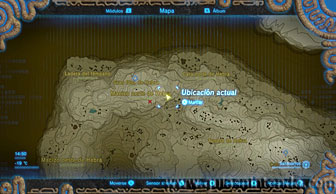
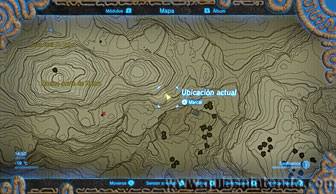
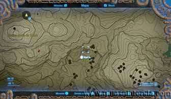
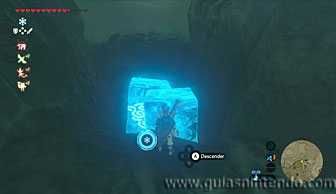
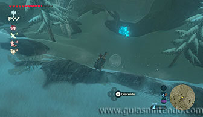
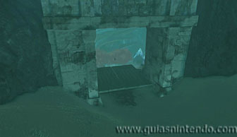
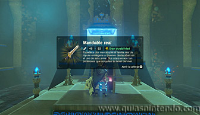

Puedes entrar en este santuario desde que llegas a la región de la torre de Hebra. Primero debes localizar una puerta cerrada
aunque no podrás abrirla por tus propios medios (si has hecho la misión secundaria
"Los fósiles de ballenas" la tendrás
ya abierta).
Mira la localización en las siguientes fotos.

Ahora debes localizar un pequeño lago un poco más al este de la puerta (donde está el cursor en la foto siguiente).

En ese pequeño lago debes crear dos bloques de hielo para que sirvan de plataformas. Después sigue subiendo la montaña y encontrarás unas bolas de nieve. Coge una y lánzala hacia el pequeño lago.

La bola rodará pasando por encima de los bloques de hielo hasta llegar a la puerta que cierra la cueva. Así podrás abrirla y entrar en ella.

Una vez dentro solo tienes que abrir el cofre que contiene un mandoble real y después podrás examinar el altar para obtener un símbolo de valía.
